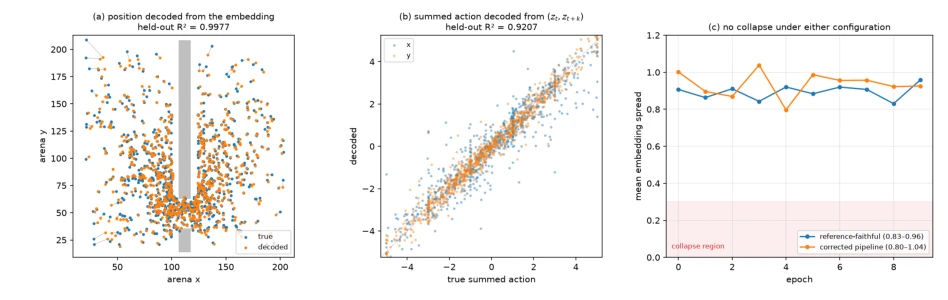
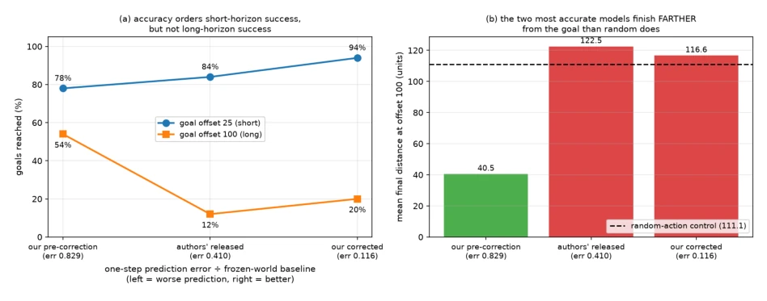

This paper serves as a 'revealing mirror' in the reproduction community, using less than $25 of compute to deconstruct the '87%' myth of LeWorldModel on TwoRoom into shreds. The authors did not employ any fancy large models, but acted like a detective, uncovering four 'hidden conventions' hidden deep in the code but never written in the configuration files: dense action gathering, ImageNet normalization, Z-score standardization of actions, and procedurally set action encoder width. Most ironically, the original author's weights could only achieve a 14% success rate under the incorrect evaluation protocol, but after correcting these 'unwritten rules', the reproducer directly reached 94%. This is not only a successful reproduction but also a biting satire on 'config is truth': without these hidden code logics, the model cannot even converge. The paper also exposes the self-contradiction of the evaluation protocol itself, and the complete decoupling of 'one-step prediction accuracy' and 'long-horizon planning capability', proving that in the field of embodied intelligence, looking only at prediction error curves is like guessing lottery numbers from weather forecasts, completely unreliable.
LeWorldModel (Maes et al., 2026b) claims to have achieved an 87% goal achievement rate in the TwoRoom basic diagnostic environment, while similar methods can easily reach 97-100%. This abnormal performance on the 'simplest' task is not only suspicious but may also mask the method's true defects in more complex scenarios. The deficiencies of existing work lie in: First, the evaluation protocol has serious ambiguity; the paper appendix and codebase configuration directly clash on goal offset and step budget, leading to irreproducible results; Second, key data preprocessing and action encoding conventions are not public; the training process cannot be restored relying solely on configuration files; Third, there is a lack of rigorous verification on the correlation between 'prediction accuracy' and 'planning capability'. Joyjeet Singh (2026) points out that without solving these 'hidden conventions' and protocol conflicts, any conclusions about model performance are castles in the air. This study aims to clarify the root causes leading to result deviations through independent reproduction, prove how the evaluation protocol itself determines the final results, and reveal the truth of training convergence.
The study adopts an Independent Reproduction strategy, rather than directly running the original author's scripts, to expose all hidden assumptions. The overall Pipeline is divided into three stages: data loading, model training, and evaluation verification. First, in the data loading stage, the authors discovered and corrected four key conventions: actions must be densely gathered within the frameskip block rather than subsampled; action encoder width must be dynamically set by code (frameskip×action_dim); pixel inputs must use ImageNet mean/variance normalization rather than simple division by 255; action data needs Z-score standardization and removal of NaN rows. Second, in the model training stage, ViT-Tiny is used as the encoder, and a six-layer Transformer as the predictor; the objective function consists of prediction loss (MSE) and anti-collapse regularization term (sketched isotropy test). The authors specifically point out that the BatchNorm layer in the original configuration causes the validation loss to be abnormally amplified 300 times in evaluation mode, thereby masking the fact that training loss decreases, therefore mode calibration is required. Finally, in the evaluation stage, the authors strictly verified the consistency of the environment, and compared two conflicting evaluation protocols (appendix-defined long-horizon protocol vs codebase-defined short-horizon protocol), quantified the protocol's impact on results through the method of controlling variables (only changing target construction method). The entire process emphasizes a 'gating' mechanism to ensure verification of configuration, code, and data integrity before each experiment.
Experiments were conducted in the TwoRoom environment, using weights released by the original author and the reproduced model, with evaluation completed on a single laptop CPU. Main findings include: 1. Protocol conflict: Original author weights achieved 84.0% under the codebase protocol, only 14.0% under the appendix protocol, while the corrected reproduced model reached 94.0% under the codebase protocol. Only changing the target construction method (from offset 25 frames to 100 frames), success rate plummeted from 84.0% to 8.0%. 2. Convergence truth: Models without corrected conventions cannot converge; after correction, training loss decreases monotonically. 3. Prediction and planning decoupling: The model with the smallest one-step prediction error performed worst in long-horizon planning, even worse than random strategy, proving prediction accuracy cannot predict long-horizon planning capability. 4. Normalization trap: BatchNorm layer causes validation loss to be artificially inflated 300 times under specific conditions. Ablation experiments show that correcting only action dense gathering and normalization can significantly improve performance.

Figure 1: The representation carries what the predictor needs. (a) Position decoded by a ridge probe against true position, in arena coordinates, for 800 held-out frames; the dividing wall and door are drawn for reference. Held-out R2 = 0.9977. (b) Summed action decoded from a pair of consecutive embeddings against the true summed action; held-out R2 = 0.9207. (c) Mean embedding spread per epoch for both training configurations; no monotone decline appears in either, and no run collapsed. Panels (a) and (b) use the reference-faithful checkpoint as trained; recalibrated, it probes at 0.9977 and 0.9290, and the corrected-pipeline checkpoint at 0.9971 and 0.9132 (Table 2, both recalibrated).

Figure 2: Prediction accuracy orders short-horizon planning success and fails to order long- horizon planning success. (a) Goals reached against one-step prediction error, with the axis running from worse to better prediction. At goal offset 25 the relationship is monotone; at offset 100 it is not, and the least accurate checkpoint is the strongest planner. (b) Mean final distance at offset 100. Bars above the dashed line finish farther from the goal than a random-action policy does; the two most accurate checkpoints both do.